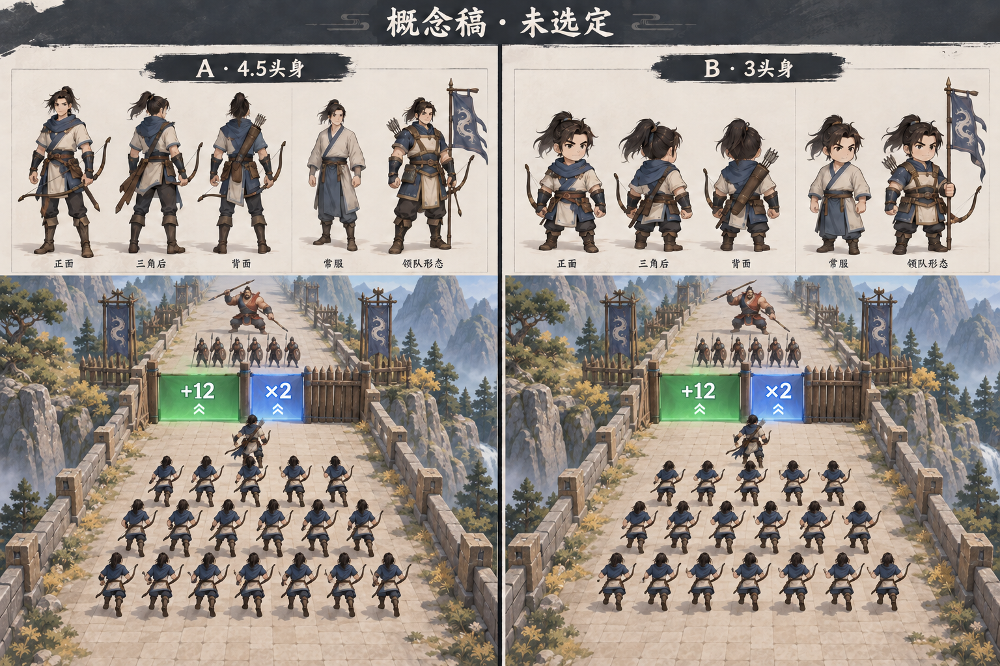

两种候选气质、同一个角色。下面是概念稿，游戏目前使用明确标识的临时人物。

体态更挺拔，弓与动作更清楚。偏轻快的国风动画战将。
轮廓更紧凑，表情和晋升变化更鲜明。偏轻松的小人物成长。
这是用概念稿背面角色做的排布检查，非游戏实机、非正式贴图。每个手机框为 390 × 844 CSS 像素，人数包含队首主角。底图插画的人数仅作构图参考；此处人数由程序精确排列。
录屏为真实 Cocos 构建与触摸输入；概念图尚未接入游戏。
从首页到第一次增兵 · 10 秒
完整首局